📖
نظرية الخلية
الفصل الأول: الخلايا · الصفحات ٢٢ – ٢٩
❓ السؤال الأساسيكيف تنتظم أجسام المخلوقات الحية؟
💡 الزبدة⚖️ انتبهي للفرق🔍 توضيح⚠️ فخ في الاختبار✍️ حلّ سؤال الكتاب
في كل بطاقة فكرة واحدة: اقرئي فقرة الكتاب ثم حاشيتها، ثم اسحبي إلى البطاقة التالية 👈
أنظر وأتساءل
قد تتفاجئين أن هناك شيئًا تشتركين فيه مع الطلائعيات، ومنها الطحالب الخضراء؛ فجميع المخلوقات الحية تتكون من خلايا. تُرى، كيف يبدو شكل الخلايا؟
✍️ الجوابفكّري ثم اضغطي
معظم الخلايا لا يمكن مشاهدتها بالعين المجردة، فنحتاج إلى المجهر. وقد وصف روبرت هوك خلايا الفلين بأنها صناديق صغيرة متراصة تشبه خلايا النحل.
📝 مفردات الدرس
الخليةالوحدة الأساسية للمخلوق الحي، وأصغر جزء فيه قادر على الحياة.
النسيجمجموعة الخلايا المتشابهة التي تقوم معًا بالوظيفة نفسها.
العضومجموعة من نسيجين مختلفين أو أكثر تعمل معًا للقيام بوظيفة محددة.
الجهاز الحيويمجموعة الأعضاء التي تعمل معًا لأداء وظائف محددة.
العنصرمادة نقية لا يمكن تجزئتها إلى مواد أبسط منها.
المركّبمادة تتكون باتحاد كيميائي بين عنصرين أو أكثر.
ص٢٤ · كيف اكتُشفت الخلايا؟
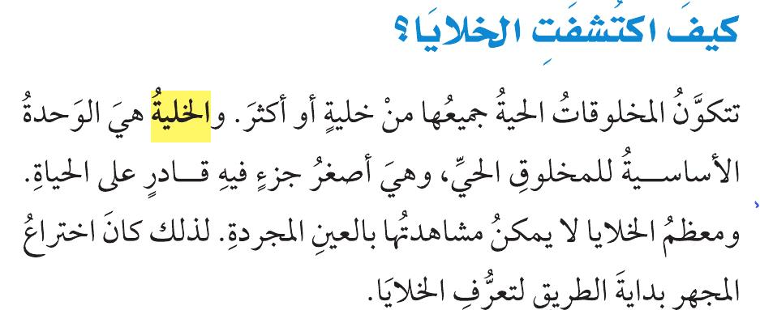
💡 الزبدة
الخلية هي الوحدة الأساسية للمخلوق الحي، وأصغر جزء فيه قادر على الحياة.
معظم الخلايا لا نراها بالعين المجردة، لذلك كان اختراع المجهر بداية الطريق لتعرّفها.
معظم الخلايا لا نراها بالعين المجردة، لذلك كان اختراع المجهر بداية الطريق لتعرّفها.
ص٢٤ · كيف اكتُشفت الخلايا؟
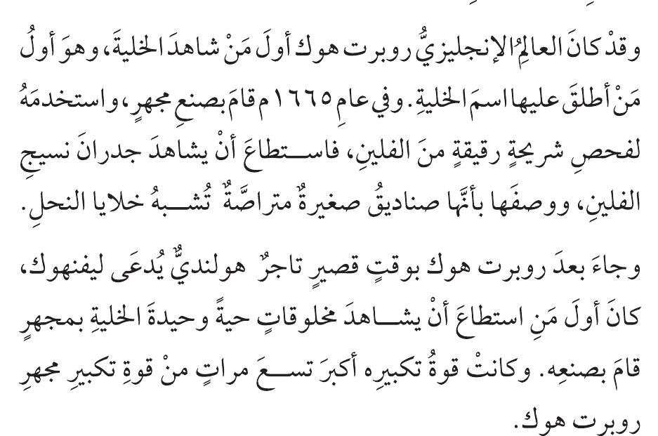
⚖️ انتبهي للفرق
روبرت هوك
عالم إنجليزي
أول من شاهد الخلية وأطلق عليها اسم الخلية (١٦٦٥م)
شاهد جدران نسيج الفلين: صناديق صغيرة متراصة تشبه خلايا النحل
ليفنهوك
تاجر هولندي
أول من شاهد مخلوقات حية وحيدة الخلية
مجهره أكبر قوة تكبير بتسع مرات من مجهر هوك
⚠️ فخ في الاختبار
هوك شاهد جدران خلايا الفلين، أما ليفنهوك فشاهد مخلوقات حية وحيدة الخلية.
ص٢٤ · كيف اكتُشفت الخلايا؟
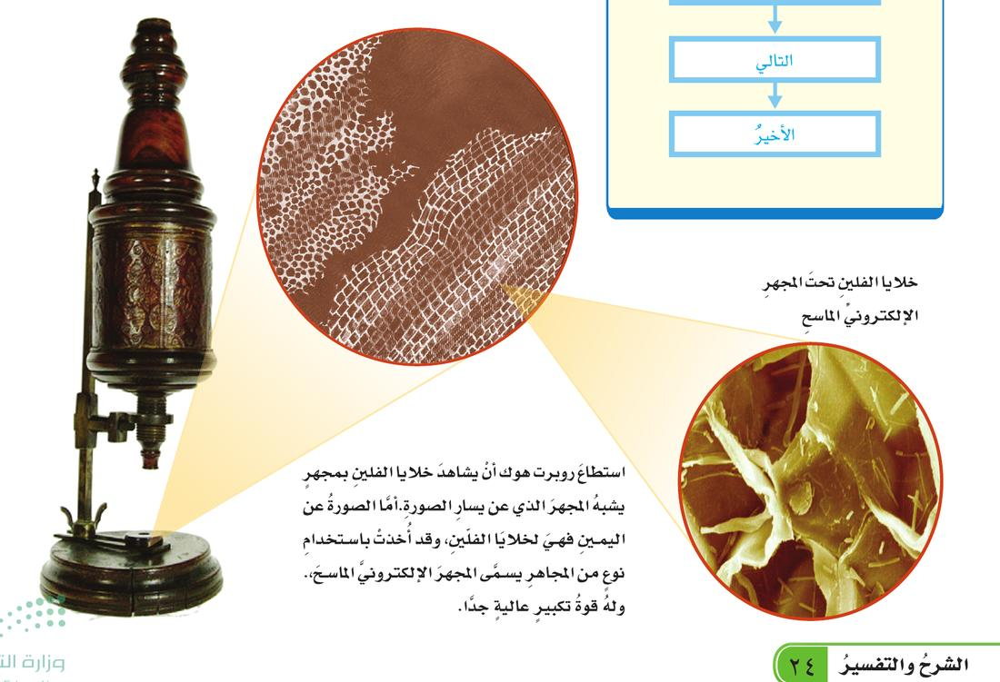
🔍 توضيح
صورة خلايا الفلين على اليمين أُخذت بنوع من المجاهر يسمى المجهر الإلكتروني الماسح، وله قوة تكبير عالية جدًا.
ص٢٥ · تطور نظرية الخلية
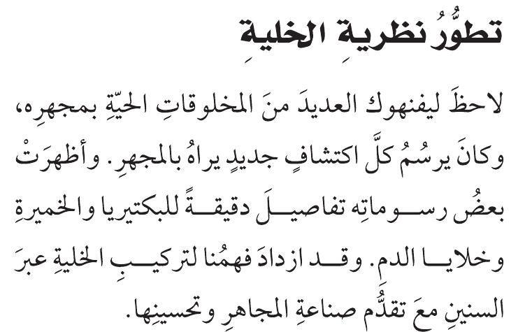
🔍 توضيح
أظهرت رسومات ليفنهوك تفاصيل دقيقة للبكتيريا والخميرة وخلايا الدم.
وكلما تقدّمت صناعة المجاهر وتحسّنت، ازداد فهمنا لتركيب الخلية.
وكلما تقدّمت صناعة المجاهر وتحسّنت، ازداد فهمنا لتركيب الخلية.
ص٢٥ · تطور نظرية الخلية
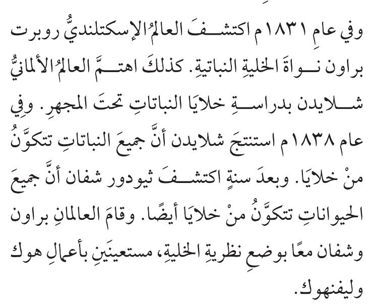
⚖️ من فعل ماذا؟
براون (١٨٣١م)اكتشف نواة الخلية النباتية
شلايدن (١٨٣٨م)استنتج أن جميع النباتات تتكون من خلايا
شفان (بعد سنة)اكتشف أن جميع الحيوانات تتكون من خلايا
شلايدن وشفانوضعا نظرية الخلية مستعينين بأعمال هوك وليفنهوك
⚠️ فخ في الاختبار
لا تخلطي بين شلايدن وشفان. تذكّري: شلايدن ← شجر 🌳 (النباتات)، وشفان ← حيوان 🐾.
ص٢٥ · تطور نظرية الخلية
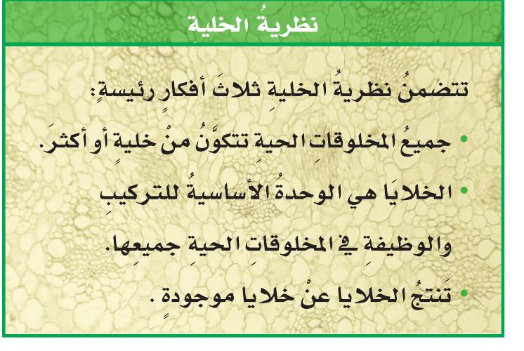
💡 الزبدة
احفظي أفكار النظرية الثلاث بثلاث كلمات:
١- تتكوّن: جميع المخلوقات الحية تتكون من خلية أو أكثر.
٢- وحدة: الخلايا هي الوحدة الأساسية للتركيب والوظيفة.
٣- تنتج: تنتج الخلايا عن خلايا موجودة.
١- تتكوّن: جميع المخلوقات الحية تتكون من خلية أو أكثر.
٢- وحدة: الخلايا هي الوحدة الأساسية للتركيب والوظيفة.
٣- تنتج: تنتج الخلايا عن خلايا موجودة.
ص٢٥ · تطور نظرية الخلية
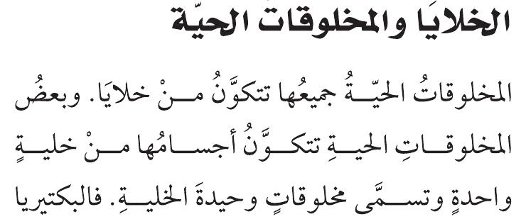
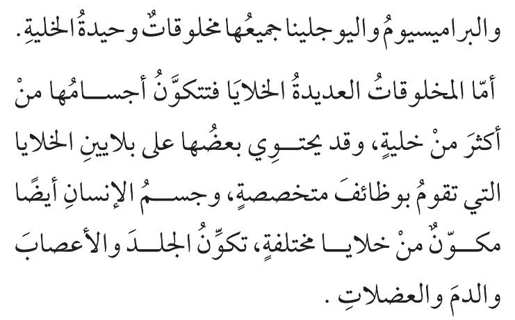
⚖️ انتبهي للفرق
مخلوقات وحيدة الخلية
جسمها خلية واحدة
البكتيريا، البراميسيوم، اليوجلينا
مخلوقات عديدة الخلايا
جسمها أكثر من خلية، وقد تبلغ بلايين الخلايا
الإنسان: خلايا الجلد والأعصاب والدم والعضلات
ص٢٥ · تطور نظرية الخلية
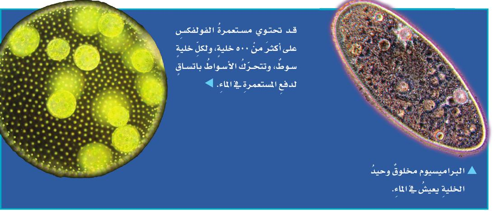
🔍 توضيح
البراميسيوم مخلوق وحيد الخلية يعيش في الماء.
أما الفولفكس فمستعمرة قد تحتوي على أكثر من ٥٠٠ خلية، ولكل خلية سوط.
أما الفولفكس فمستعمرة قد تحتوي على أكثر من ٥٠٠ خلية، ولكل خلية سوط.
ص٢٥ · تطور نظرية الخلية
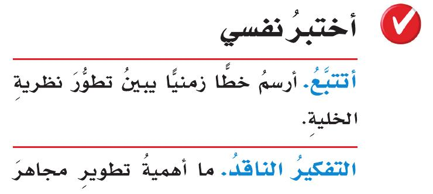
✍️ حلّ «أختبر نفسي»اضغطي لتري الإجابة
أتتبع: ١٦٦٥م هوك يشاهد خلايا الفلين ← ليفنهوك يشاهد مخلوقات وحيدة الخلية ← ١٨٣١م براون يكتشف نواة الخلية النباتية ← ١٨٣٨م شلايدن: النباتات من خلايا ← بعد سنة شفان: الحيوانات من خلايا ← شلايدن وشفان يضعان نظرية الخلية.
التفكير الناقد: لأن المجاهر الأقوى تُظهر تفاصيل أدق، فيزداد فهمنا لتركيب الخلية.
التفكير الناقد: لأن المجاهر الأقوى تُظهر تفاصيل أدق، فيزداد فهمنا لتركيب الخلية.
ص٢٦ · مستويات التنظيم: الأنسجة والأعضاء
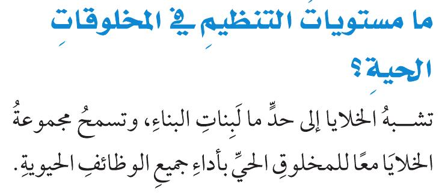
💡 الزبدة
تشبه الخلايا لبنات البناء؛ تجتمع معًا لتؤدي جميع وظائف المخلوق الحي.
ص٢٦ · مستويات التنظيم: الأنسجة والأعضاء
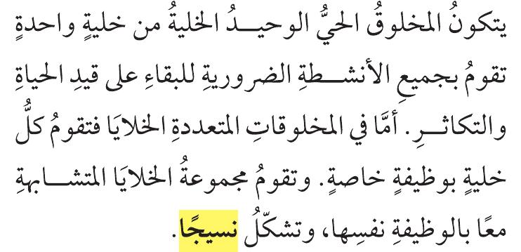
💡 الزبدة
مجموعة الخلايا المتشابهة التي تقوم بالوظيفة نفسها تشكّل نسيجًا.
⚖️ انتبهي للفرق
وحيد الخلية
خلية واحدة تقوم بجميع الأنشطة الضرورية للبقاء والتكاثر
متعدد الخلايا
كل خلية تقوم بوظيفة خاصة
ص٢٦ · مستويات التنظيم: الأنسجة والأعضاء
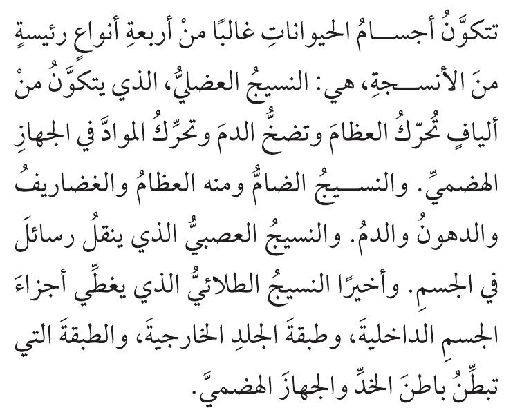
⚖️ أنواع الأنسجة الأربعة
العضليألياف تحرّك العظام وتضخ الدم وتحرّك المواد في الجهاز الهضمي
الضامالعظام والغضاريف والدهون والدم
العصبيينقل رسائل في الجسم
الطلائييغطي أجزاء الجسم الداخلية، وطبقة الجلد الخارجية، ويبطّن باطن الخد والجهاز الهضمي
⚠️ فخ في الاختبار
الدم والعظام والدهون كلها نسيج ضام، وليست نسيجًا عضليًا.
ص٢٦ · مستويات التنظيم: الأنسجة والأعضاء
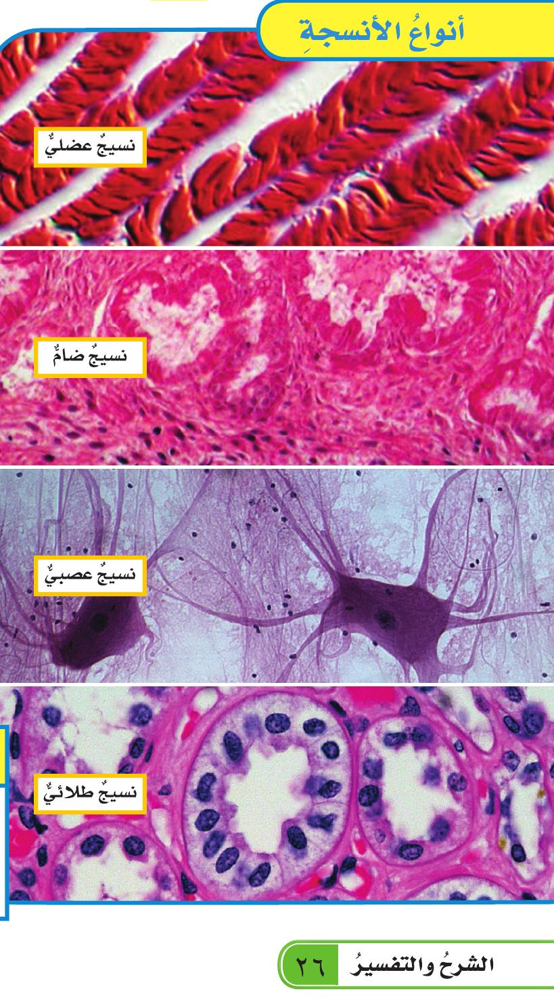
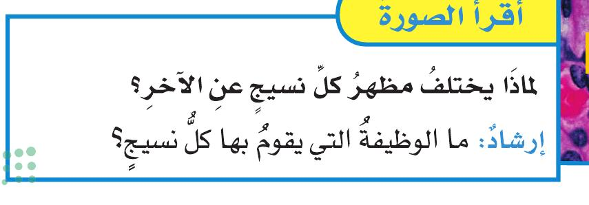
✍️ حلّ «أقرأ الصورة»اضغطي لتري الإجابة
يختلف مظهر كل نسيج عن الآخر؛ لأن كل نسيج يقوم بوظيفة مختلفة.
ص٢٦ · مستويات التنظيم: الأنسجة والأعضاء
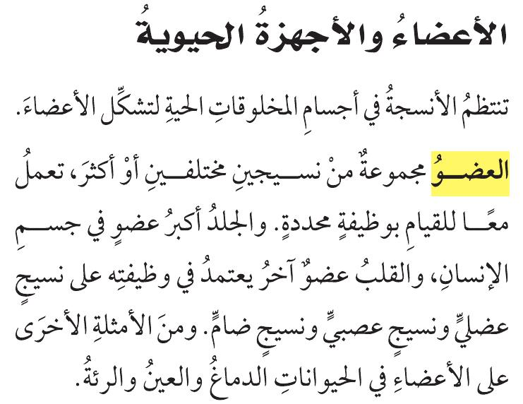
💡 الزبدة
العضو = نسيجان مختلفان أو أكثر تعمل معًا لوظيفة محددة.
القلب يعتمد في وظيفته على نسيج عضلي ونسيج عصبي ونسيج ضام.
القلب يعتمد في وظيفته على نسيج عضلي ونسيج عصبي ونسيج ضام.
⚠️ فخ في الاختبار
أكبر عضو في جسم الإنسان هو الجلد.
ص٢٦ · مستويات التنظيم: الأنسجة والأعضاء
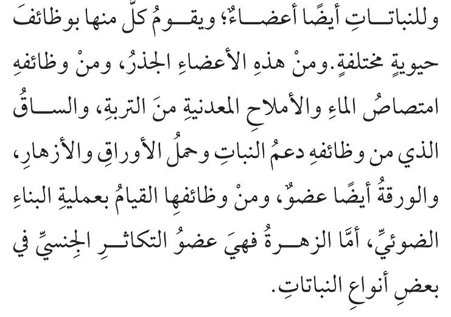
⚖️ أعضاء النبات
الجذرامتصاص الماء والأملاح المعدنية من التربة
الساقدعم النبات وحمل الأوراق والأزهار
الورقةالقيام بعملية البناء الضوئي
الزهرةعضو التكاثر الجنسي في بعض أنواع النباتات
ص٢٧ · الأجهزة الحيوية
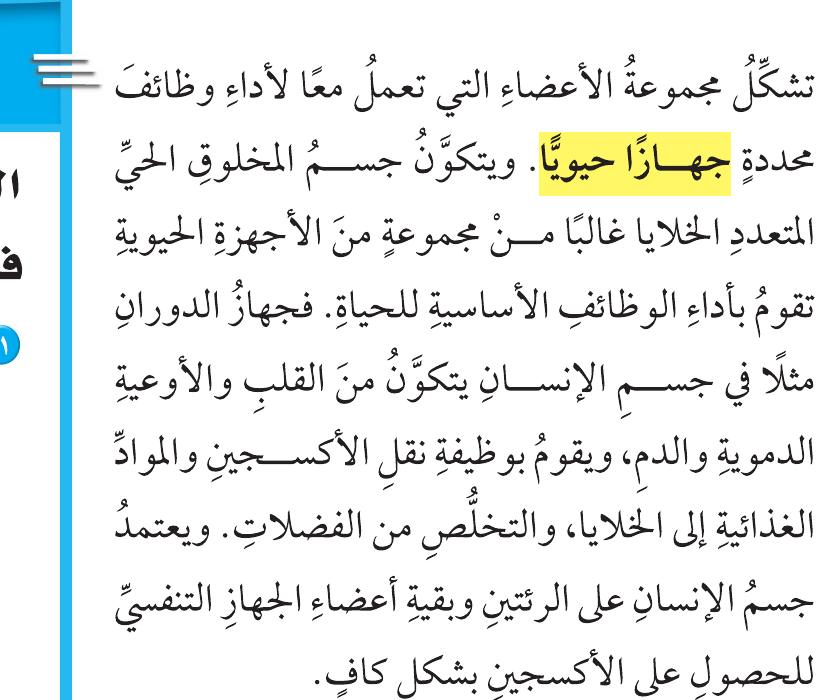
💡 الزبدة
الجهاز الحيوي = مجموعة أعضاء تعمل معًا لأداء وظائف محددة.
🔍 توضيح
مثال: جهاز الدوران يتكون من القلب والأوعية الدموية والدم، ويقوم بنقل الأكسجين والمواد الغذائية إلى الخلايا، والتخلص من الفضلات.
ص٢٧ · الأجهزة الحيوية
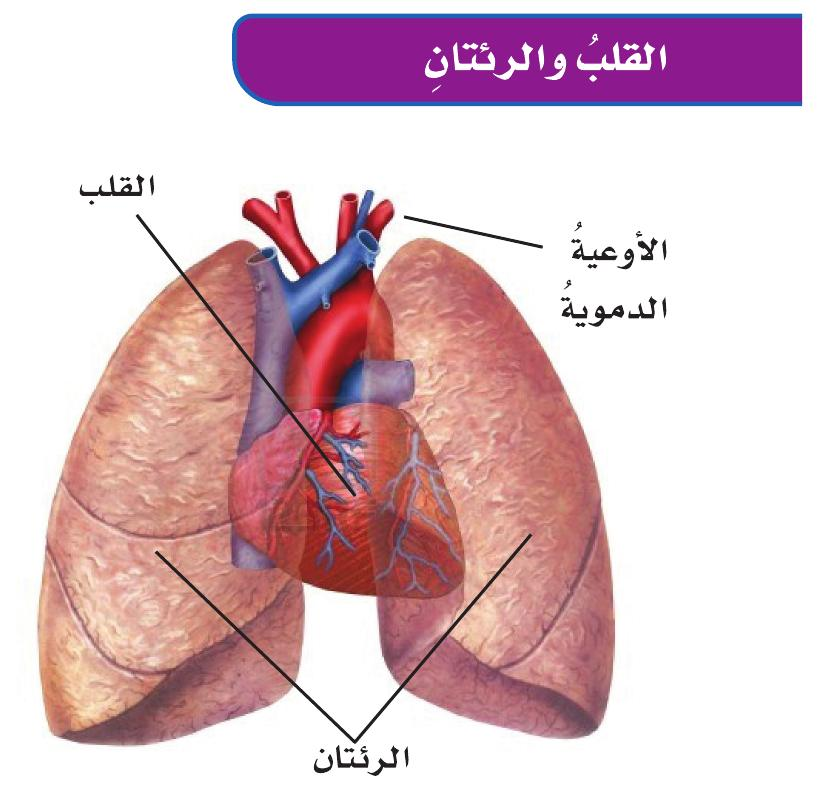
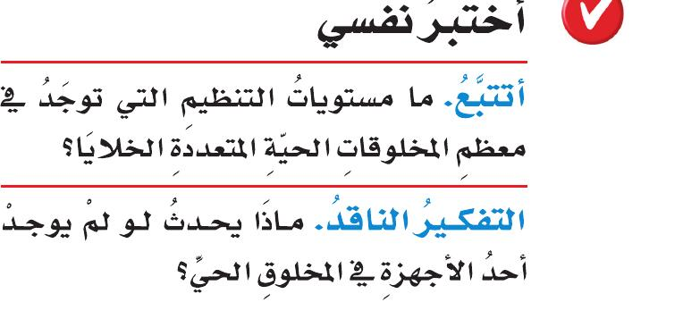
🔍 ترتيب مستويات التنظيم
خلية←نسيج←عضو←جهاز حيوي←مخلوق حي
من الأصغر إلى الأكبر.✍️ حلّ «أختبر نفسي»اضغطي لتري الإجابة
أتتبع: الخلايا ← الأنسجة ← الأعضاء ← الأجهزة الحيوية ← المخلوق الحي.
التفكير الناقد: لا يستطيع المخلوق الحي أداء الوظيفة التي يقوم بها هذا الجهاز، فيتأثر الجسم كله؛ لأن الأجهزة تعمل معًا.
التفكير الناقد: لا يستطيع المخلوق الحي أداء الوظيفة التي يقوم بها هذا الجهاز، فيتأثر الجسم كله؛ لأن الأجهزة تعمل معًا.
ص٢٨ · المواد الموجودة في جميع المخلوقات الحية
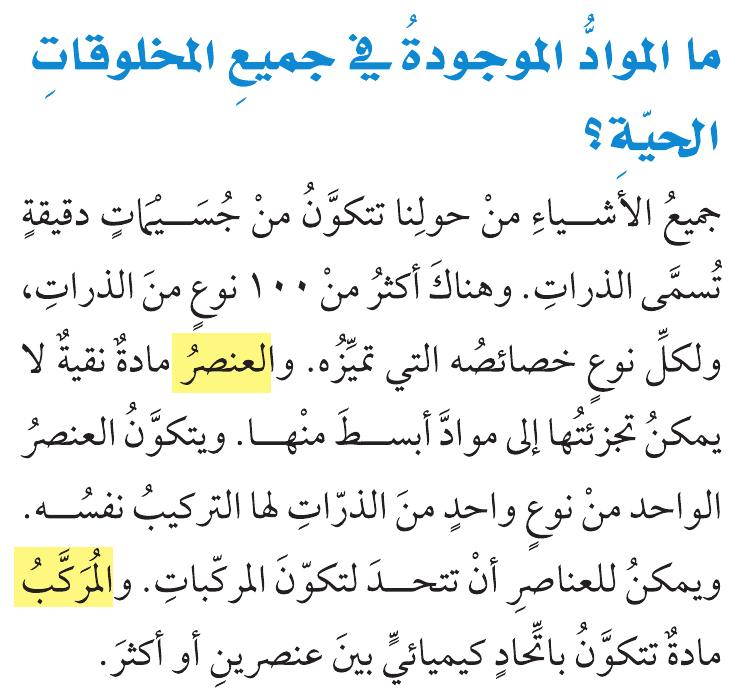
💡 الزبدة
كل الأشياء من حولنا تتكون من ذرات، وهناك أكثر من ١٠٠ نوع منها.
⚖️ انتبهي للفرق
العنصر
مادة نقية لا يمكن تجزئتها إلى مواد أبسط
يتكون من نوع واحد من الذرات
المركّب
مادة تتكون باتحاد كيميائي بين عنصرين أو أكثر
يتكون من أكثر من عنصر
ص٢٨ · المواد الموجودة في جميع المخلوقات الحية
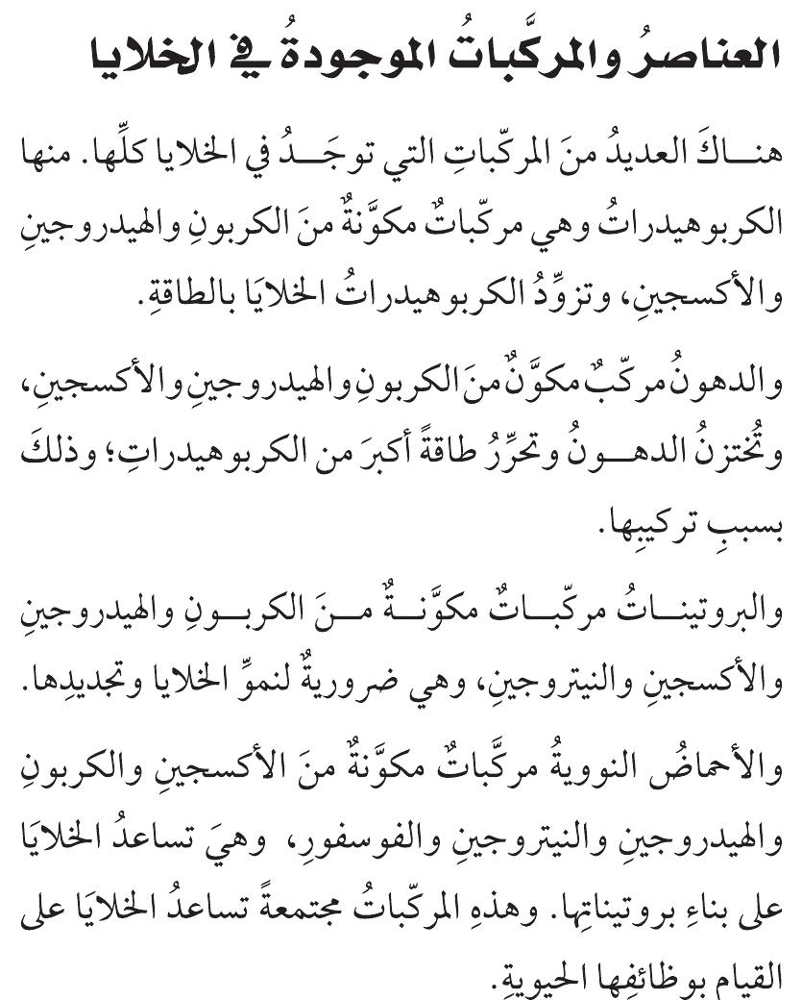
⚖️ المركّبات في الخلايا
الكربوهيدراتيتكون منكربون، هيدروجين، أكسجينعملهتزوّد الخلايا بالطاقة
الدهونيتكون منكربون، هيدروجين، أكسجينعملهتختزن طاقة وتحرّر طاقة أكبر من الكربوهيدرات
البروتيناتيتكون منكربون، هيدروجين، أكسجين، نيتروجينعملهضرورية لنمو الخلايا وتجديدها
الأحماض النوويةيتكون منأكسجين، كربون، هيدروجين، نيتروجين، فوسفورعملهتساعد الخلايا على بناء بروتيناتها
⚠️ فخ في الاختبار
الفوسفور موجود في الأحماض النووية فقط، والنيتروجين في البروتينات والأحماض النووية.
ص٢٨ · المواد الموجودة في جميع المخلوقات الحية
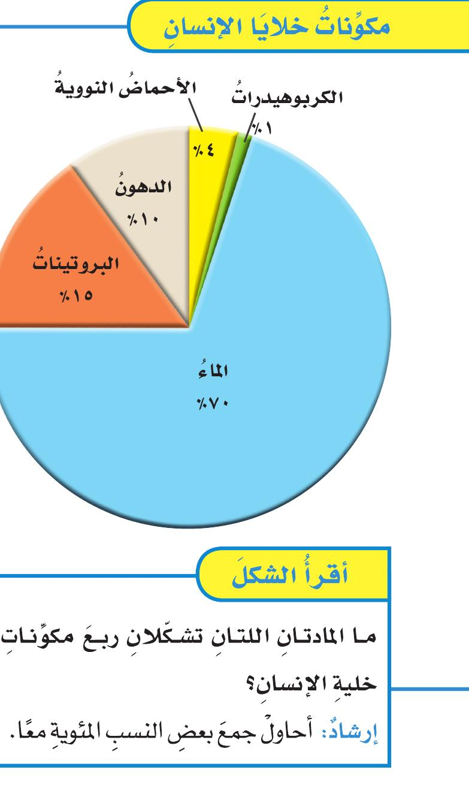
💡 الزبدة
الماء هو أكبر مكوّن في خلية الإنسان (٧٠٪)، ثم البروتينات (١٥٪)، ثم الدهون (١٠٪).
✍️ حلّ «أقرأ الشكل»اضغطي لتري الإجابة
البروتينات (١٥٪) والدهون (١٠٪)، ومجموعهما ٢٥٪ أي الربع.
ص٢٨ · المواد الموجودة في جميع المخلوقات الحية
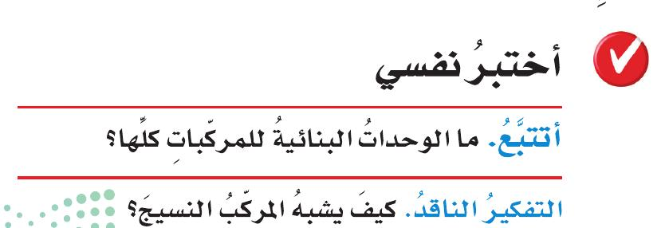
✍️ حلّ «أختبر نفسي»اضغطي لتري الإجابة
أتتبع: العناصر.
التفكير الناقد: كما يتكون النسيج من خلايا تعمل معًا، يتكون المركّب من عناصر متحدة معًا.
التفكير الناقد: كما يتكون النسيج من خلايا تعمل معًا، يتكون المركّب من عناصر متحدة معًا.
📌 الخلاصة · خريطة المفاهيم
🔬 الخليةالوحدة الأساسية للمخلوق الحي
⬇تتجمع في
🧵 النسيجخلايا متشابهة بوظيفة واحدة
⬇تتجمع في
❤️ العضونسيجان أو أكثر
⬇تتجمع في
🫁 الجهاز الحيويأعضاء تعمل معًا
⬇تتجمع في
🧍♀️ المخلوق الحيأجهزة تعمل معًا
نظرية الخلية
- المخلوقات تتكون من خلايا
- الخلية وحدة التركيب والوظيفة
- الخلايا تنتج عن خلايا موجودة
مكونات الخلية
- الماء ٧٠٪
- البروتينات والدهون
- الأحماض النووية والكربوهيدرات
📌 الخلاصة · مَن فعل ماذا؟ العلماء
🔬روبرت هوك (١٦٦٥م)
ماذا فعل؟أول من شاهد الخلية وسمّاها، في نسيج الفلين
🔍ليفنهوك
ماذا فعل؟أول من شاهد مخلوقات حية وحيدة الخلية بمجهر صنعه
🌿براون (١٨٣١م)
ماذا فعل؟اكتشف نواة الخلية النباتية
🌳شلايدن (١٨٣٨م) وشفان
ماذا فعلا؟شلايدن: النباتات تتكون من خلايا
شفان: الحيوانات تتكون من خلايا
ووضعا معًا نظرية الخلية
شفان: الحيوانات تتكون من خلايا
ووضعا معًا نظرية الخلية
📌 الخلاصة · الأنسجة الأربعة
💪النسيج العضلي
🛠️ عملهيحرّك العظام، ويضخ الدم، ويحرّك المواد في الجهاز الهضمي
🦴النسيج الضام
أمثلتهالعظام، الغضاريف، الدهون، الدم
🧠النسيج العصبي
🛠️ عملهينقل رسائل في الجسم
🧴النسيج الطلائي
🛠️ عملهيغطي أجزاء الجسم الداخلية، وطبقة الجلد الخارجية، ويبطّن باطن الخد والجهاز الهضمي
📌 الخلاصة · لا تخلطي بينها
العنصر
تعريفهمادة نقية لا يمكن تجزئتها إلى مواد أبسط
مثال من الكتابالكربون، الأكسجين
المركّب
تعريفهمادة تتكون باتحاد كيميائي بين عنصرين أو أكثر
مثال من الكتابالماء، البروتينات
📌 الخلاصة · لا تخلطي بينها
النسيج
يتكون منخلايا متشابهة
مثالالعضلي، الضام
العضو
يتكون مننسيجين مختلفين أو أكثر
مثالالقلب، الجلد، الورقة
الجهاز الحيوي
يتكون منمجموعة أعضاء
مثالجهاز الدوران
📌 الخلاصة · أهم النقاط
- اختراع المجهر كان بداية الطريق لتعرّف الخلايا: هوك شاهد خلايا الفلين، وليفنهوك شاهد مخلوقات وحيدة الخلية.
- نظرية الخلية: المخلوقات تتكون من خلايا، والخلية وحدة التركيب والوظيفة، والخلايا تنتج عن خلايا موجودة.
- مستويات التنظيم: خلية ← نسيج ← عضو ← جهاز حيوي ← مخلوق حي.
- أنواع الأنسجة في الحيوانات: عضلي، ضام، عصبي، طلائي.
- تتكون الخلايا من مركّبات: كربوهيدرات ودهون وبروتينات وأحماض نووية، والماء أكبر مكوّناتها.
🧠 اختبري نفسك · ١ من ٤
رتّبي من الأصغر إلى الأكبر: عضو، خلية، جهاز حيوي، نسيج.
✅ الجوابفكّري ثم اضغطي
خلية ← نسيج ← عضو ← جهاز حيوي.
🧠 اختبري نفسك · ٢ من ٤
القلب: نسيج أم عضو أم جهاز حيوي؟
✅ الجوابفكّري ثم اضغطي
عضو؛ لأنه يتكون من أكثر من نسيج (عضلي وعصبي وضام).
🧠 اختبري نفسك · ٣ من ٤
يتكون الماء من الهيدروجين والأكسجين. هل الماء عنصر أم مركّب؟
✅ الجوابفكّري ثم اضغطي
مركّب؛ لأنه يتكون باتحاد عنصرين.
🧠 اختبري نفسك · ٤ من ٤
من أول من شاهد مخلوقات حية وحيدة الخلية؟
✅ الجوابفكّري ثم اضغطي
ليفنهوك، بمجهر قام بصنعه.
🌟
أحسنتِ!
أنهيتِ مذاكرة الدرس. الآن جاء دور التحديات، وتذكّري: أول محاولة هي المحسوبة 🎯
🎮 انتقلي إلى التحديات📄 الدرس ملف PDF